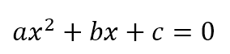
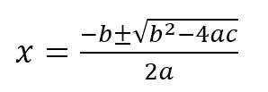

Expressions

2 + bx + c = 0.'>To perform calculations, you write expressions to calculate the answer in a form similar to that used in mathematics. Consider the quadratic equation:

This equation has two solutions given by the quadratic formula:
To solve this in C++, you write an expression which uses + in place of the ± symbol, to calculate one of the roots, like this:
(-b + sqrt(b * b - 4 * a * c)) / (2 * a)An Expression Vocabulary
An expression is any combination of operators and operands which, when evaluated, yields a value.
- An operand indicates a value. Operands include:
- Literals: which represent a value
- Variables: a storage location containing a value
- Function calls: which can produce a value
- Sub-expressions: which yeild a value
- An operator is a symbol which performs an operation on one or more operands and, subsequently, produces a value. Operators have three characteristics:
- Arity: the number of operands required. Unary operators require a single operand, while binary operators require two.
- Precedence: determines which operands "bind to" the operator. Those with higher precedence "stick to" their adjacent operands more closely.
- Associativity: determines whether operations, at the same level of precedence, should proceed from right-to-left, (called right-associative), or from left-to-right, (called left-associative).
This linked table shows the precedence and associativity for all of the C++ operators.
 This course content is offered under a
CC
Attribution Non-Commercial license. Content in this course
can be considered under this license unless otherwise noted.
This course content is offered under a
CC
Attribution Non-Commercial license. Content in this course
can be considered under this license unless otherwise noted.